Wine is an alcoholic beverage made with the fermented juice of grapes. Technically, wine can be made with any fruit (i.e. apples, cranberries, plums, etc) but most wines are made with wine grapes.
Archaeological evidence has established the earliest known production of wine from fermented grapes during the late Neolithic site of Hajji Firuz in the northern Zagros Mountains or early Chalcolithic in the northern edge of the Middle East. The earliest chemically attested grape wine was discovered at Hajji Firuz in the northwestern Zagros Mountains, ca. 5400 BC. Both archaeological and genetic evidence suggest that the earliest production of wine may slightly predate this, with the earliest wine-making likely having taken place in Trans-Caucasia (including Armenia, Azerbaijan, Georgia), through the region between Eastern Turkey, and Northwest Iran.
The earliest form of grape-based fermented drink was found in northern China, where archaeologists discovered 9000-year-old pottery jars, while the earliest archaeological evidence of wine particles found has been in Georgia, where archaeologists discovered evidence of wine residue inside ceramic jars that were dated back some 8000 years and Iran (c. 5000 BC). The earliest evidence of wine production was discovered in Armenia within the Areni-1 winery in 2007 and is at least 6100 years old, making it the oldest winery in the world. The development of a winery implies wine had started being produced much earlier.
Wine grapes are different than table grapes: they are smaller, sweeter and have lots of seeds. Most wines are made with a single species of grape that originated in Caucasus called Vitis vinifera. There are thousands of different varieties within the Vitis vinifera species–the most common is Cabernet Sauvignon.
Wine grapes take an entire season to ripen and thus, wine is produced just once a year. This is where the term vintage comes from: “Vint” stands for “Winemaking” and “age” implies the year it was made. So, when you see a vintage year listed on the label, that’s the year the grapes were picked and made into wine. The harvest season in the northern hemisphere (Europe, US) is from August–September and the harvest season in the southern hemisphere (Argentina, Australia) is from February–April.
Occasionally, you’ll find a wine without a vintage listed on the label. Typically, this is a blend of several vintages together; and in the case of Champagne, it will be labeled with “NV” which stands for “Non-Vintage.”
A single-varietal wine is made primarily with one type of grape. It’s common to see these wines labeled by the name of that grape variety. For example, a bottle of Riesling is made with Riesling grapes. It’s useful to note that each country has different rules for how much of the variety should be included in order to be labeled as a varietal wine.
Percentage Required to Label as a Single-Varietal Wine
A wine blend is a wine made with a blend of several grape varieties. Blending is a traditional method of winemaking, and today there are several famous wine blends produced in classic winemaking regions. Just so you know, most wine blends are mixed together after the fermentation (and aging) is complete. When grapes are blended and fermented together it is called a field blend. A famous example of a field blend is Port wine.
What is ABV?ABV = Alcohol by volume (abbreviated as ABV, abv, or alc/vol) is a standard measure of how much alcohol (ethanol) is contained in a given volume of an alcoholic beverage (expressed as a volume percent). It is defined as the number of millilitres of pure ethanol present in 100 millilitres of solution at 20°C.
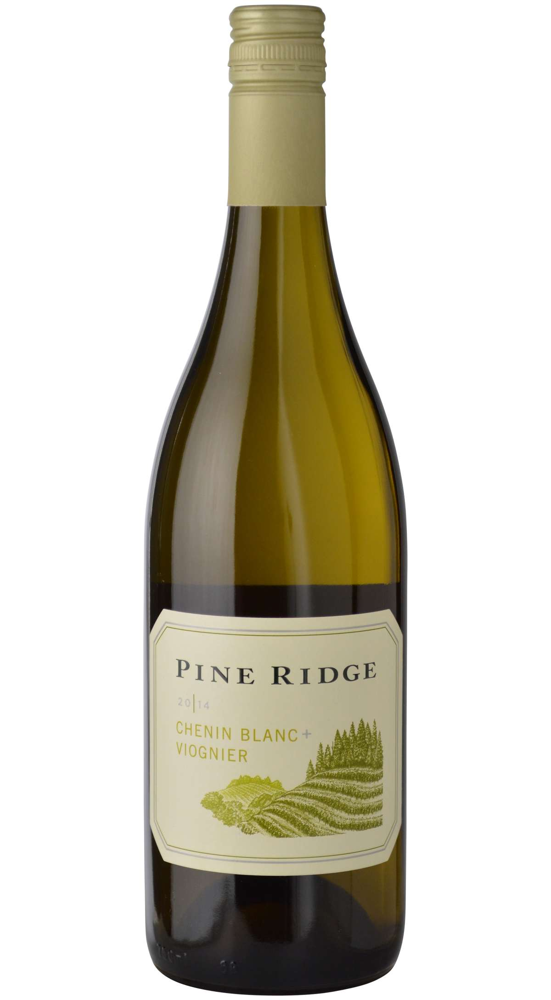
History: In the early 1990s, Pine Ridge crafted this unusual and delectable blend as an experimental bottling, creating one of our most beloved and popular wines. This unique marriage of two varietals that would never share the same bottle in their native France unites the crisp, honeyed fruit of Chenin Blanc with the plush body and juicy stone fruit notes of Viognier, for a wine that is both sophisticated and easy to enjoy.
Tasting notes: The newest release of our intriguing blend delights the nose with a charming bouquet of enticing aromas of fresh Meyer lemon, fuzzy peach, ripe honeydew melon and yellow plum, mingled with touches of citrus blossom and white tea. The clean, vibrant palate enters with juicy pomelo, sweet lychee and honeyed tangerine fruits, balanced by vibrant acidity and hints of yellow apple and key lime pie that last through the crisp and refreshing finish.
Origin: Pine Ridge, CA
ABV: 12.5%
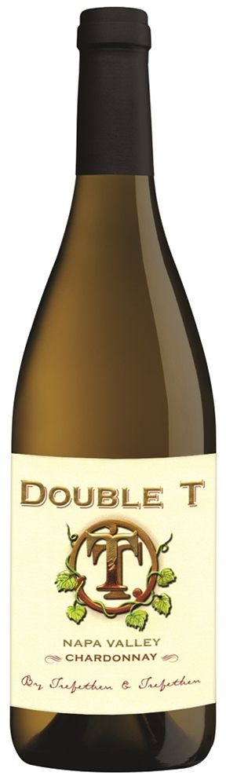
Trefethen Family Vineyards produces a diverse range of award-winning varietal, blended and reserve wines – all from our Napa Valley estate – exhibiting the classic hallmarks of fine wine quality: richness with elegance, concentration with finesse, complexity with harmony, and sophistication with approachability. Reflecting both the relatively cool climate of our Oak Knoll District of Napa Valley estate vineyard and the Trefethen family’s preference for balanced wines, this classic style dovetails perfectly with the growing movement of connoisseurs in the United States away from wines of unbridled alcohol and ripeness toward wines of greater finesse and food-friendliness.
Tasting notes: Flavors of citrus, peach & nectarine make this wine great for sipping. Bright fruit leads to notes of graham cracker & baking spices while enhancing the full-bodied mouthfeel. - Winery
Origin: Napa, CA
ABV: 14.1%
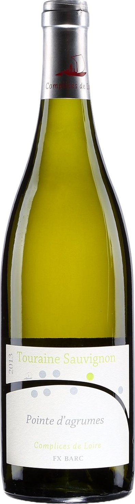
Tasting notes: Limpid, white flower and citrus flavors dominate this bottle. The ample and sour mouth, provide a good length for an immediate pleasure. It can be appreciated as an aperitif and with shellfish, fish and cheeses.
Origin: Loire Valley, France
ABV: 12.5%
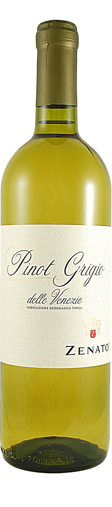
This wine is a perfect introduction to the variety. Delicately scented and soft on the palate, it offers classic citrus and floral notes in a balanced elegant style.
Tasting notes: Lemon-green in color, aromas of Key limes and white peaches complement undertones of green apples and grains of paradise. On the palate, it is smooth and refreshing with a long, pleasant finish.
Origin: Venato, Italy
ABV: 12.8%
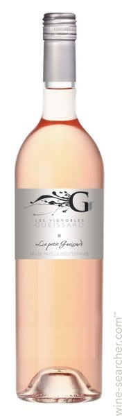
Grape type: Mourvèdre (30%), Sytrah (30%), Cinsault (10%), Grenache (30%), Cabernet-Sauvignon (5%)
Tasting notes: A salmon colour with nuances of dark pink. Red fruit aromas such as raspberry, wild strawberry, and some notes og litichi. Fresh, rich and long-lasting in the mouth.
Origin: Provence, France
ABV: 12.5%
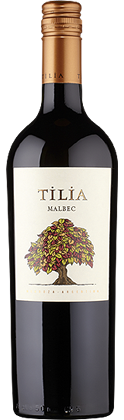
The Tilia wines are made at Bodegas Esmeralda in the Eastern region of Mendoza. They are made by Leopoldo Kuschnaroff, a winemaker and viticulturist in charge of all Catena family vineyards in Eastern Mendoza. This Malbec exemplifies the true varietal character of Malbec from Mendoza. The grapes are sourced from vineyard sites in the Eastern and Southern regions of Mendoza ranging in elevation from 2,600 to 4,300 feet above sea level.
Tasting notes: Aromas of black cherries and plums are accompanied by notes of violets and vanilla. On the palate the wine is rich and full-bodied with flavors of juicy blackberries, cranberries, and black currants abound, followed by notes of vanilla and sweet spice.
Origin: Mendoza, Argentina
ABV: 13%
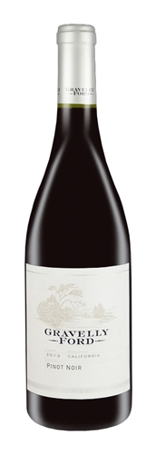
Tasting notes: Medium-light garnet in color, Gravelly Ford Pinot Noir offers intense aromas of raspberry and cherry, accented by a touch of vanilla and sweet spice. The bright, fruit-forward palate displays soft, silky tannins, well balanced acidity with a touch of violet on the finish.
Origin: Parlier, California
ABV: 12%
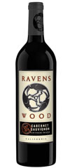
Cabernet Sauvignon today is the most planted red varietal in the world. Identified as a descendent of Cabernet Franc and Sauvignon Blanc, the late-ripening Cabernet Sauvignon needs to be planted in warmer climates to fully ripen.
Tasting notes: As real as Cab gets, with muscular tannins and juicy fruit aromas backed by gold blackberry, black currant, toasted oak and vanilla flavors.
Origin: Sonoma County, CA
ABV: 13.5%
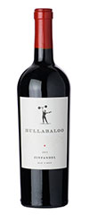
High in natural alcohol and tannin, grown carefully it can be rich and complex, with dark fruit berry fruit and peppery spice.
Tasting notes: This wine plays tricks on the palate, tasting much lighter in body than its alcohol suggests. Layered with red fruit along with a lift of herb, it is structured and composed, with a long, lingering finish.
Origin: Central Valley/Lodi, CA
ABV: 15.3%
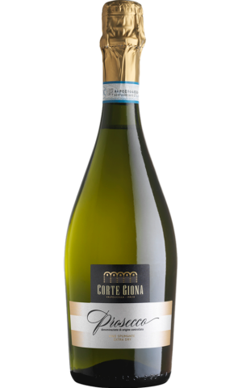
A delicate straw yellow in the glass with persistent bubbles. Plentiful citrus and orchard fruit aromas rise from the glass and on the palate it is dry, fruity, and mineral. A zippy acidity leads into the finish which is fruit-forward and exquisitely dry. Grape type: 95% Glera, 5% Pinot Grigio
Tasting notes: Typical fruity, pleasantly dry. Perfect as an aperitif with light starters or seafood.
Origin: Veneto, Italy
ABV: 11%
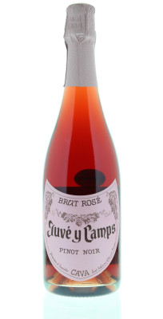
This Rosé Brut is made from 100% Pinot Noir grapes that come from the newly acquired Feixa 1 vineyard on the historic Juvé y Camps estate. The free run juice undergoes a cold-soak maceration followed by fermentation in stainless steel. The resulting wine blends the traditional methods of Juvé y Camps with international flair and flavor.
Tasting notes: This Cava is beautiful, salmon-pink in color. On the nose, the delicate aromas evolve from notes of fresh red apple and strawberries to hints of honey white flowers and toasted almond. On the palate the texture is rich and creamy with a fine perlage.
Origin: Cataluna, Spain
ABV: 12%
If you are more of a graphic type of person, below is a treat for your.
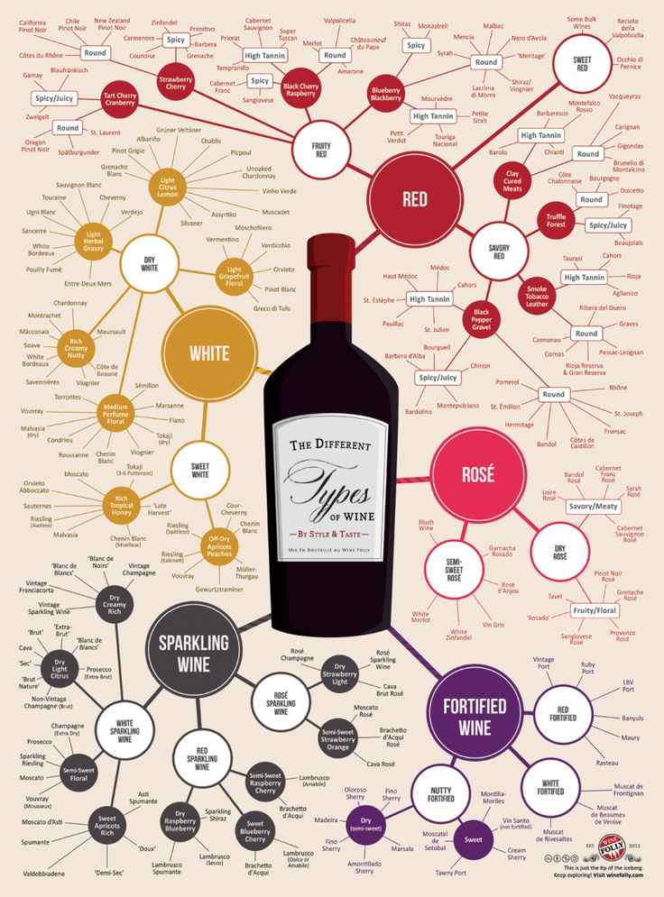